{kind=link}
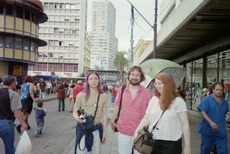
{kind=link}
{kind=link}
{kind=link}
{kind=link}

In June 2005 I went to the 6° Fórum Internacional Software Livre (FISL) -- the 6th International Free Software Conference -- in Porto Alegre, Brazil. It was great and worth the time. Here’s a travelogue, which I hope you’ll enjoy. This should give you a glimpse of what these conferences look like from a speaker’s point-of-view. I also jabber on about topics such as Brazil’s relationship with open source software / Free software (OSS/FS), why OSS/FS is so strong in Brazil, that women have arrived, how the word “free” in English is even more confusing than people first realize, some comments about my own presentation, and how I ended up trying to document OSS/FS Java implementations.
I started flying Monday night at 9:40pm, managing to get a few hours of highly interrupted and low quality sleep in the cattle section of the plane. This was a long flight -- about 10 hours -- going from Washington, DC, to Sao Paulo, Brazil. The one highlight was that I sat with a very nice Brazilian lady, who was returning to visit her elderly mother and had a lot of great stories to share. I arrived in Sao Paulo, Brazil, around 8am on Tuesday. I couldn’t really go see Sao Paulo (or I’d miss my connecting flight), but I stepped out of the airport to at least get a glimpse. I also dutifully exchanged my dollars for the local currency with the airport thieves, I mean, money exchangers. (Yes, other places have better rates, but it wasn’t clear I’d have the opportunity before I needed some cash.)
At this point I was seriously toasted. I had already stayed up til 3am on several nights to meet some other deadlines, and only a week before I’d been in San Diego, California (from which I was still recovering). I was having seriously weird sensations from sleep deprivation. In Sao Paulo I met the first person also going to FISL, in this case Russ Nelson (we’d never physically met before). I introduced myself to him, and about 20 seconds later I re-introduced myself just as though the previous introduction hadn’t happened. He graciously went through the motions; a minute later I realized what had happened. A Matrix-type moment, very surreal.
After some wandering around in the airport (airports aren’t that exciting anywhere in the world), I went to the gate. We were joined by Scott Collins (who works for TrollTech; he’s also had a long history with Mozilla). Scott is a riot in person; the picture I’m showing here is from later in the conference, but the picture of his laugh here is a good illustration of his general good nature. Go ahead and click on the picture if you’d like; most pictures on this travelogue can be expanded by clicking on them (if you’re viewing this on-line).
All of us knew instinctively what most travelers know: traveling in a herd is safer for everyone. More fun, too. And it’s not necessary to agree with every viewpoint of those you travel with... in fact, I find learning different people’s (reasoned) point of view very stimulating.
A short flight (and a desparately needed on-plane nap) brought us to Porto Alegre.
Brazil is a large country; it’s the fifth largest country in the world in both
area and population as of 2005.
It’s too bad I didn’t have time to see more of it.
Porto Alegre is in Rio Grande do Sul (R.S.), the southernmost
state of Brazil.
Since we were south of the equator, it was winter; it wasn’t really cold,
but this meant that daylight savings time was not in effect.
I knew that seasons reversed when you crossed the equator, but
I hadn’t realized its impact on daylight savings time for countries that
choose to use it.
This means that Brazil and the U.S. east coast
can be 1 or 3 hours different, depending on the time of year
(along with other alternatives if they don’t switch simultaneously).
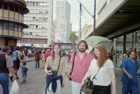
On arriving in Porto Alegre, we and others were picked up by the conference organizers; I got to my hotel by around 2pm. Unfortunately, almost everything closes at 5pm, so if I wanted to see anything I needed to go right then. I asked all of the speakers I could find if anyone wanted to go, and I found a few willing (insane) people who were willing to go out after depositing their worldly goods in their rooms. Again, safety in numbers. Till Kamppeter (LinuxPrinting.org), David Turner (FSF), and Janet Cosey (FSF) were willing to play at being tourists, so off we went. We saw the Porto Alegre marketplace... all sorts of stuff to buy there, including some cheap and tasty churros. We also managed to find and see the cathedral. On the sides of the cathedrals are South American symbols instead of the gargoyles found on many European cathedrals... I thought that was especially interesting.
We also found a restaurant. Here’s what I quickly concluded about food in southern Brazil:
I was also introduced to guaraná, a fruity carbonated drink that I’ve never seen in the U.S. It’s really good; several locals specifically recommended the Antarctica brand, but all of them were really good. It’s sweet, but not as in-your-face sweet as Inca Cola is. I’ve gotta get more of that stuff. I brought back five cans of guaraná as souvenirs to share, and of all the booty I brought back, I think the guaraná was the most appreciated.
You learn stuff about people when you travel with them. David “Novalis” Turner (FSF) looks like a software developer... and surprise, surprise, he is. But I also learned that both his parents are lawyers. That probably gave him a head start, since he’s now very involved in the GNU GPL Compliance Lab and other licensing/legal issues. I believe there’s a strong similarity in many ways in how lawyers and software developers think; both fields work to gain precision in language, and require thinking through a series of consequences in a logical fashion. James Grimmelmann has a series of articles that illustrates some of the similarities between legal thinking and how a software developer would think (it’s called “Law School in a Nutshell” -- see Part I, Part II, and Part III).
I got back to the hotel and utterly collapsed.
I think some others got together, but my body needed a break.
June 1 was the first day of the conference, labelled a “community day”. It started at 8:30am. The conference had a booth area, though many booths were planning to open starting June 2. This was a multi-track conference; by 9am there were eleven simultaneous presentations, plus the booth area, where people could go.
The conference was focused on open source software / Free Software (OSS/FS), also called FLOSS or FOSS in the U.S., and usually called software livre in Portuguese. OSS/FS programs are programs whose licenses give users the freedom to run the program for any purpose, to study and modify the program, and to redistribute copies of either the original or modified program (without having to pay royalties to previous developers). As the Internet has risen to prominence, so has OSS/FS; most websites depend on OSS/FS, including megasites like Amazon.com, Yahoo!, and Google. Some choose OSS/FS simply because in many cases it costs less. Others choose it for other reasons, such as to gain these freedoms and thus have more control over your own computer(s).
Many conference presentations were in Portuguese, Brazil’s official language, but there were a number of presentations given in English. In addition, two rooms always did simultaneous translations, so English was always available in those two rooms (either natively from the speaker or via translation). I had worked to learn a little Portuguese before I flew down, using the very impressive Pimsleur method, but it’s difficult to get a lot out of a presentation when your knowledge is limited to phrases like “Hello”, “Thank you”, and “I speak a little Portuguese”.
One of those two rooms was the “big room” (shown here). The big room could hold 1,000 people. The opening and closing ceremonies were held there, as were the talks by Tso, myself, Collins, Raymond, and Maddog.
I had a short dinner with Eric Raymond, who had just come in after a long and painful flight. Eric tried to improve my Portuguese pronunciation, but this was like teaching a pig to dance; you should be impressed that a performance happens at all, and worry less about the quality of the results. 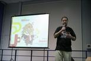 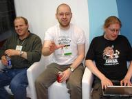
Day one continued all the way with multiple tracks through 10pm (!). Zounds. As Peter Quinn noted to me later, both conference organizers and participants had one heck of a work ethic. And I stayed until 10pm, because several presentations were about Java implementations. People such as Bruno Souza (president of SouJava, a Brazilian Java user group that is a member of the Java Community Process), Dalibor Topić (lead maintainer of Kaffe), Mark Wielaard (lead for GNU Classpath, the leading OSS/FS Java core library implementation), and Geir Magnusson (lead for Apache Harmony) gave presentations. Information about OSS/FS Java implementations is really hard to get -- particularly how all the pieces work together -- and the FISL conference had many of the main leaders, so I really wanted to get the big picture. I definitely got some information, for example, Geir made the first public presentation in the world about Apache Harmony. But even after this day, I didn’t get all the information I was looking for. As you’ll see, I eventually got that insight into OSS/FS Java implementations, but it took some effort...
One thing they did do was throw T-shirts out into the crowd, a little practice that happened in other presentations too. It certainly got the crowd’s interest, and it made the various T-shirt catchers very happy.
I went to the hotel and collapsed, but I knew I couldn’t sleep in...
There was an 8:30am presentation on Thursday about an interesting security topic (on managing access control lists on distributed LDAP. Well, it was interesting to me!). I heard a few presentations after that, including a presentation on an improved method for doing streaming media.
The presentation “A comparison of Free Software [Development] Web Portals” was of particular interest to me, because they compared various sites that provide ready-made infrastructure for those who develop OSS/FS. These sites maintain mailing lists, software configuration management programs, and other tools so that developers who want to work together can concentrate on simply improving their project, and let others maintain the infrastructure. There were many pros and cons, but it became obvious why SourceForge is still the most popular such portal. SourceForge has far fewer restrictions (it permits a broad range of licenses and has no topic limits), it lets you keep your copyright, it works in English, and it has lots of services -- though clearly there are cases where you might go elsewhere. One major limitation of this study is that they didn’t have a real project to submit, nor did they try to interview those who did. Thus, they couldn’t evaluate “private” information available only to those with active projects. I didn’t think that limitation was necessary -- it wouldn’t have been that hard to start a small project, or work with an existing project, to get the data they needed. But their work was still interesting.
The official conference opening presentation was held at 11:30. This was an odd time, since the conference had been going on for a day and a half. But it was definitely interesting, because it showed how the Brazilian government and industry leaders view open source software / Free software (OSS/FS).
The government and industry leadership participation was amazing. The opening ceremonies for FISL began with the Brazilian national anthem (I’m not a citizen of Brazil, so I simply stood respectfully as I would for any country). Then the presentations began, which involved speeches by, or the formal presentation of, the Vice-Mayor of the city of Porte Alegre, the Vice-Governor and the Technology Secretary of Rio Grande do Sul (R.S.), a personal representative of the President of Brazil, the president of the Social Security Information Technology (IT) company, the president of the national IT company Serpro, and many other dignitaries.
This impression of government and industry backing only accelerated later in the conference. In a lively debate on June 3, speakers included a vice president of the First Bank of Brazil (Cerqueira Cesar), the President of the national mail service (Dilberto Nerry Petry), a vice-minister (?) of the planning ministry of the Brazilian federal government (Marcelo de Carvalho Lopes), the first secretary (vice minister) of science and technology (Rogério Santanna), a member of the board of the Cobra IT company (Eduardo Armond), and so on, and so on.
I’ve no doubt mangled many titles and names, but that’s not the point. The point is that Brazilian government and industry views OSS/FS quite differently from most in the United States. For many Brazilians, OSS/FS was essentially an opportunity to regain national sovereignty or company control over their own infrastructure, instead of allowing an external company (and a foreign one at that) to maintain total control and visibility over their internal infrastructure. There also appeared to be significant concerns about transparency as a reason why OSS/FS was so strongly preferred -- one speaker said something like “Governments need to know what happens in their networks, so they need to audit their code, so it [must?] be public source.” This reminded me of the text in a proposed law in Peru introduced by Peruvian Congressman Edgar Villanueva Nunez; one of its principles was “To guarantee national security it is vital to have systems hat are devoid of elements that allow remote control or the ransmission of non-desired information to third-parties. herefore, it is required to have systems whose source code s freely accessible to the public, so that its inspection be llowed by the State, the citizens and a great number of freelance experts in the world.”
Three of the Brazilian federal government ministries each had their own large-scale booths at the conference. Each seemed emphasize their own (different) role, and how they used OSS/FS to further their ministry’s objectives. And all seemed well-attended.
This is no recent event. Back in 2000, the Rio Grande do Sul state government passed a law that in some cases required government agencies to use “software livre.” On June 2, 2003, the Brazilian government announced plans to migrate from Windows to Linux in 80% of all computers in state institutions and state-owned businesses (as a gradual 3-year migration). Others have noticed this Brazilian surge in use of OSS/FS, too. Some have reported that there’s some sort of firm government-wide mandate to use only OSS/FS. As far as I can tell, that’s not true, but OSS/FS is clearly widespread. For example, I went to the university facilities people on Friday to get a printout of my presentation. This was a different group than the conference organizers, and I noticed that the computer they used for general-purpose tasks like this was not running Windows... it was running some Linux distribution.
One speaker discussed his experience with Monsanto and their seeds. He stated that GMO’d seeds (of which one company owns 90% of the patents) creates domination by a single company and a monoculture. He then compared that situation to information technology and to OSS/FS. There were a number of formal signatures and ceremonies; there was a formal recognition of SouJava (a Brazilian Java group that now is officially part of the Java Community Process, allowing it to represent OSS/FS projects for certification). There was also a release of a network management program as OSS/FS, which a note that this was just the first of a series to “decrease cost and improve functionality of IT.”
Every country is different, and I find it fascinating to see such differences in mindset and approach at work.
Yes, I went all the way to Brazil to hear about OSS/FS in Massachusetts. But this wasn’t just any talk, this was a presentation by Peter Quinn, Chief Information Officer (CIO) of the Commonwealth of Massachusetts. And again, it was interesting to hear different perspectives.
Quinn struck me as pragmatic, results-oriented person, and those are great traits to have in a CIO. He noted the problems of scale: if Massachusetts were a company, it would be the 60th largest company in the U.S. with 200 business units and an IT budget of $600 million. That sounds like a lot of money, but when you spread it across their many tasks, it’s difficult to do everything. He had a number of concerns, including preserving history, having data stored in formats accessible to all and ones that are not technically restricted. Indeed, he was concerned that the U.S. civil war would be better documented than anything in the last ten years.
All too often, government leaders just declare a plan without first examining what the needs are. Instead, Quinn made sure that he found out what his IT users were actually doing with their computers, first. And what his support people found was interesting: it turns out that only a very small percentage even generate documents, so for most of them, an office suite to create documents isn’t necessary. Instead, what they needed was a web browser, email, and calendar. In general, people tended to use only a few applications (the ones they needed for their job), and “most people are readers, not writers”.
Eric Allman, developer of Sendmail, spoke on dealing with spam. He’s someone worth listening to on this topic -- Sendmail is the world’s most popular mail transfer program, so if you use email, you (indirectly) use his work all the time.
He noted that there are two main email authentication methods (that can work with unknown senders): address/path-based systems (like SPF and Microsoft’s Sender-ID), and cryptographic signature based systems. There had been an effort to merge SPF and Sender-ID, but Microsoft insisted on patenting Sender-ID, so everyone else threw away Sender-ID and is using SPF instead if they want an address-based system. In the cryptographic signature world there has been Yahoo’s DomainKeys and Cisco’s Identified Internet mail -- Allman announced that the two are now working to merge them into a single standard, “Domain Key Identified Mail” (DKIM).
But authentication is only useful if you can gauge the reputation of the sender, since spammers can sign their email too. There are lots of challenges here, and he discussed various options.
In an over-4,000 person conference it can be hard to
get your message across... so a number of stunts were
pulled off throughout the conference for people to get
their message across.
You can see pictures here of a few.
If nothing else, they were fun.
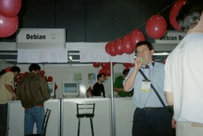
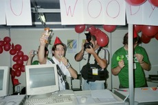
Probably one of the nicest stunts was the “Goodbye Woody” party held at the Debian booth. Debian is a notoriously conservative distribution, and it was starting to get to be a joke that their “stable” distribution was more like an “antique” distribution (their caution makes some sense for servers, but it makes no sense for clients). Debian has finally cleared all their internal checks, and planned to release as the conference closed. Thus, they had a “goodbye Woody” party complete with party hats, etc., that was very well received by everyone.
Most conferences like this have lots of booths, and FISL did too. You had the usual large company booths, such as from IBM, Sun, and Unisys. As I noted earlier, several government ministries had large booths related to OSS/FS, which was unusual. There were a few booths dedicated to pitching to visitors, e.g., outreach to tourists and a local bar’s pitch.
You had the usual large number of small businesses, too. There were lots of interesting vendors, most of them selling various kinds of service or consulting arrangements. For example, I talked with Solis, a small business that specializes in support for libraries and universities; I thought they were particularly interesting. Lots of companies did general consulting and support, and seemed to be doing fine at it. Two of the main questions people ask about OSS/FS is “how can you make money at OSS/FS?” and “how do I get support?”, not realizing that perhaps those two questions are connected.
OSS/FS conferences often have lots of non-profit organizations / consortias that maintain projects of various kinds. This conference had a large number of them, such as OpenOffice.org.br (a Brazilian OpenOffice.org group), Debian, LinuxChix, and so on.
I had several interesting conversations with the OpenOffice.org.br group, including several with the person who heads the translation effort to make sure that the OpenOffice.org office suite has a complete (and high-quality) localization to Brazilian Portuguese. I asked him what font he’d recommend for maximum portability between Linux and Windows when using OpenOffice.org; he didn’t know, but he did try to find out. I’ve since learned that the Bitstream Vera fonts are specially recommended in this case, since all OpenOffice.org installations include them. That’s no doubt because they have a generous license yet are high quality; basically anyone can install them at any time. If you exchange between OpenOffice.org and Microsoft Office, you may be best off using the Windows fonts in your documents, because most Windows users only have those fonts and may not understand how to install other fonts (like Bitstream Vera). It’s really important to make sure that the fonts in your documents are installed on the computer you’re using, especially for presentations. OpenOffice.org imports and exports many documents to Microsoft Office quite well now, but if the fonts are not installed on the “other” system you might not realize it. That’s not limited to OpenOffice.org; fonts are important for any document exchange, especially in documents like presentations where placement matters. 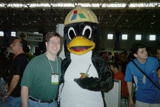
He had some absolutely beautiful glossy handouts made by Itaipu.
Itaipu is a massive multinational construction project, and they’ve
standardized on OpenOffice.org as their office suite.
They train all their IT workers on OpenOffice.org, and after the training
hand out “cheat sheets” (one each for
the word processor, spreadsheet, and presentation portions of the program).
The cheat sheets help remind people how to use the program, and
were stunningly beautiful: multi-color, glossy finish, clear text and
graphics... and on the front covers, a really funny Tux the penguin
wearing a construction hat.
Itaipu had their own booth, and had a Tux the penguin
dressed in a hard hat and carrying a chimarrão;
obviously that required a picture :-).
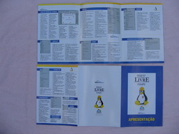
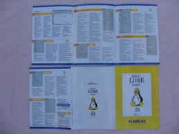
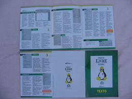
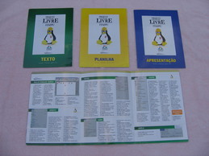
I noted in my FOSDEM 2002 travelogue that FOSDEM felt electric, but I was also disturbed at how few women were involved in the FOSDEM conference. The lack of female involvement in information technology (IT) and in technology in general has been noted for many years; in many ways OSS/FS is just yet another example of that.
But FISL was quite different in that respect. There were a significantly larger number of women, both as speakers and as attendees. There were also a number of presentations throughout the conference on how to increase the involvement of women even further. (On August 25, 2005, Sulamita Garcia sent me an email confirming this -- in Brazil, they have managed to grow female participation from just a few people to about 20% of the conference attendees and LUG users. That's far more participation than many other countries see.)
I visited the LinuxChix booth to see what I could learn about all this -- certainly they were a visible element! I talked with one of the LinuxChix there; it wasn’t easy because of language barriers (I don’t really speak Portuguese; she didn’t speak French and her English was not so great, though better than my Portuguese). Still, she clearly conveyed that earlier this year there had been a separate conference on increasing the involvement of women in computing. It was clear that the LinuxChix were working hard to show women that there were other women in computing. The LinuxChix booth was plastered with biographies of famous women in computing (such as Admiral Grace Murray Hopper), and one day they all wore the same fun outfit to identify themselves. It looked like they were having a lot of fun -- and that whatever was happening was working.
This also fits into other efforts to increase female involvement in IT in general, or OSS/FS in particular. And just after the conference ended, a new group named GNOME Women accounced their formation, saying that they were inspired by “the success of the Debian Women Project”.
Some told me that this massive (by comparison) participation of women in Brazil is largely due to PSL-Mulheres (Projecto Software Livre-Mulheres, or Free Software Project-Women; PSL-Mulheres is a collateral project of PSL-Brasil). So I added that remark to this travelogue, because I wanted to give credit where credit was due. But after I added this information to my travelogue, I got a heated response that the credit for Brazil’s amazing results really goes to LinuxChix BR; one email (sent to me on 2005-07-10) specifically noted Sulamita Garcia (of LinuxChix BR) as being especially effective and key to this. I think it's clear that LinuxChix BR has been an incredibly important part of this, so I certainly want to give them credit! Indeed, there has been a lot of hard work by a lot of people. I don't pretend to understand exactly who did what, so I'll simply congratulate all those who have worked so hard to produce such marvelous results. Congratulations!
So the big question is: how did this occur? Why are so many women involved in Brazil, when this is still relatively rare in many other countries? I don’t know, and since I wasn’t there and I don’t speak Portuguese, I’m the wrong person to try to find out. I suspect that the story is a complex one, involving many different people and different organizations (including LinuxChix BR and PSL-Mulheres). Some information currently available that might help is Sulamita Garcia (toskinha)'s interesting historical account, from her perspective in LinuxChix BR.
But this is a travelogue, not a detailed social analysis. I will not try to answer these (important) questions... because I don't have those answers.
I really hope that people will look over what is going in Brazil. I want to know why the Brazilians have achieved such remarkable success. What worked, and how could it be repeated elsewhere? The problem of poor female participation in IT and OSS/FS is widespread. Somehow, the Brazilians are overcoming it; Brazil could easily become a model for the rest of the world to follow.
The Free Software Foundation (FSF) has consistently used the term “Free Software”, where they mean “Free as in Freedom”. By their definition, users of “free software” are free to view the program (e.g., to do a security analysis or to learn from it), free to modify the program to suit their needs, and free to redistribute the program (modified or original) to whoever they wish. But the term “free” has other meanings, in particular, “no cost” (“gratis”). This “libre” vs. “gratis” distinction, missing in the English word free, causes no end of confusion.
In discussions with others it was revealed that the word free actually has many common meanings, not just libre and gratis:
A quick look at a dictionary finds a whole raft of definitions for the word free, in fact.
Ouch. English really is a crazy language.
I went out with Peter Quinn and several others to dinner (I wish I’d written down their names). We went to a little all-you-could-eat restaurant where they kept arriving with interesting food. I have no idea what most of it was, but it tasted great. We then went to a nearby bar, where others were supposed to be. I discovered an important rule in Brazil: do not lose the little tickets they give you when you enter; it’s how they keep track of what you drank, and it may cost you about a hundred U.S. dollars if you lose the ticket. No, I didn’t lose the ticket, but I didn’t realize til later how important it was to not lose the ticket.
I was still tired, so I bowed out early. I understand from others that not only is Quinn smart, he’s a good dancer; I missed that part.
There was a lengthy debate/discussion on June 3 about the future of OSS/FS in Brazil. It had 21 people on the panel (yikes, that’s a overly big group). It was scheduled for two hours, but took three. I didn’t attend that particular panel, but others who did told me it was really interesting; the big trouble was that they just hadn’t given the people enough time, so it went way over time (delaying my talk). 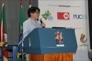
Ted Tso spoke just before me about Linux filesystems. His talk made it very clear why ext3 is so popular among the many filesystems available for Linux. SGI’s filesystem is very good, but with a big catch: You must have an uninterruptable power supply to trust it. It turns out that on x86s, when the power goes out, memory is the first to stop working and disks are one of the last, so if a disk is writing when the power goes out the disk will end up having random data scribbled all over it. SGI, when they built their own systems, modified their hardware to handle this; commodity x86s don’t have such hardware, so filesystem implementations must be designed to handle this case if they’re to be used on commodity hardware. The Reiser filesystem has lots of good properties (especially if you have many small files), but there are some risks if you have a corrupted filesystem and you want to recover it; its recovery tools can get very confused. IBM’s filesystem is very good, but it’s large and rarely used; the Linux filesystem developers are slowly copying some of the good things in that filesystem over to ext3. For many, ext3 just works, and it works well.
Then we had my talk “Why OSS/FS? Look at the Numbers!”. This was, of course, was the best talk ever given on the planet :-). I had flown all the way to Brazil to give this talk, so I had backups galore to make sure I could actually give it: a separate laptop with the presentation, a USB stick, various formats, and if all else failed I had a paper printout I could use as notes.
My talk was, as you might guess from the title, a summary of some of the many quantitative studies about OSS/FS. My goal was quite straightforward: showing that OSS/FS is worth considering when you’re getting software. I didn’t expect that to be a hard sell to this crowd, but they will still meet others who are unaware of OSS/FS, and would thus want to know them. Many people who are familiar with OSS/FS are still not aware of the many studies available about them.
But how did I end up knowing this in the first place? That’s an interesting tale. My “real job” is giving good advice about information technology, particularly relating to computer security... not by guessing or blathering opinions, but by doing serious research to find the evidence and then analyze that to develop conclusions. Naturally, I need to try to be aware of (and anticipate) information technology trends. Many years ago I noticed that “free software” / “open source software” seemed to be becoming more common and popular, and that its rise seemed to be correlated with the expansion of access to the Internet. Many of its proponents made ethical claims, which I can’t really measure. But many were also making intriguing claims that I could measure, like claims about reliability, security, and so on. So, I investigated... and while you certainly can’t show that OSS/FS is always better, it turned out that there was a lot of quantitative evidence that OSS/FS could produce excellent results. But it took a while to investigate, in part because not even its staunchest advocates seemed to know of any specific results they could point to. So once I found the data (on my own time!), it seemed appropriate to post my collection so that others could get it. At first, this was a short collection; now it borders on the encyclopediac.
As should be clear from my writings, I do not argue that OSS/FS is “always better” or other such statements. In fact, I don’t think that statement is true. But there are still places where OSS/FS is not even considered as an option when people get software; sometimes this is even due to the unintended consequences of other policies. And that’s really sad.
I’ve given the presentation before, but it’s been a while. I will post my presentation soon. You can also see my full paper, “Why OSS/FS? Look at the Numbers!” One person told me that he’d come to the conference just to hear my talk (thanks!), and Russ Nelson of OSI said he’d never heard of many of the studies that I had. Which is really the point of my effort. It’s amazing that there’s so much research on this topic, yet in the past it’s been so hard to find.
Going to FISL gave me a reason to update my presentation, and I think many people just want the “short form” not the “all studies” version. So I’m going to make the presentation that “short version”, and hopefully by making it shorter many people will be willing to translate it. In fact, I want to try to get as many translations of that presentation as I can... if you know another (human) language, and that translation isn’t available yet, please let me know.
Conferences are great for meeting other people. Since I’d shown that I was interested in quantitative studies, one person handed me a very nice report, “O Impacto do Software Livre e de Código Aberto na Indústria de Software do Brasil”. Well, I assume it’s a nice report, it’s all glossy and stuff. It’d be even nicer if I could read Portuguese. But this is less of a barrier than it used to be; Babblefish is very useful in translating things so I can get a sense of it. They’ll release an English version in August 2005, which will be even easier for me to read.
Scott Collins followed, and he gave a great talk about building user interfaces that work. I’m a big fan of teaching developers how to create good user interfaces, because I’ll have to use the interfaces they create. The problem has some similarities to the problem of teaching developers how to write secure programs, too. He gave a great presentation -- lively, interesting, and worthy points.
For example, many people (including me) have often recommended that developers divide their programs into an “engine” and the GUI, and then make sure that the engine is scriptable. I recommended this because this division makes it easy to create larger programs (by having a direct programming interface), and because it makes revamping the GUI much simpler. Collins noted the first point, but noted another good reason I had not: Creating a separate scriptable engine forces developers to think about the “language” used by their application. For example, what are the key objects, operations on them, and their interrelationships? The GIMP bitmap drawing tool has key contructs such as “layers”; the emacs text editor has key contructs such as “buffers”. Thinking carefully so that you create a consistent “language” results in a much more consistent user interface.
Oh, a warning to the English pedants:
You may have noticed in the paragraph above (and elsewhere)
that I don’t put the punctuation marks inside quotation marks.
That’s intentional.
When I can, I choose to use
logical
style quoting
(as defined by Hart’s Rules and
the Oxford Dictionary for Writers and Editors).
The logical quoting system only places
quotation marks around what’s actually being quoted...
and nothing else.
This system is widely used in the U.K. and many other places,
though only it’s only now coming into significant use
in the United States.
The manual of style for the largest English encyclopedia,
Wikipedia,
recommends the use of logical quoting.
The traditional U.S. quoting system is horrific for
anything related to computing, because adding punctuation often
completely changes the meaning.
For example, in the popular program vi,
“dd” deletes one line and
“dd.” deletes two.
Perhaps even more importantly,
placing punctuation inside a quotation
inserts intentions into other people’s mouths, and that’s
inappropriate; in a quotation, what’s quoted should be what was said.
And finally, it just doesn’t make any sense.
I believe
clarity is more important than tradition or a few typesetters’ doubtful
fiats about looking “pretty”.
Beauty must take second place to truth.
After the presentations ended, the speakers were treated by the conference organizers to a night at Churrascaria Roda de Carreta (Av. Ipiranga, 5200, if you want to go there). All you can eat food, with lots of steak, and with “Música e dança gaúcha”. We were treated with some demonstrations of traditional dances of men and women together, a 4-man dance involving swords, and a demonstration of skill with a pair of swinging balls (each at the end of a string). Pablo’s girlfriend and Maddog both got their hair mussed with these swinging balls. Maddog in particular was pressed forward by everyone; he’s widely loved and respected.
Many of us found out that two of the conference organizers eating with us were newlyweds... as in married ten days earlier. That’s extreme dedication, coming in to work on organizing a conference right after your wedding. We did shoo them off so they wouldn’t see us all the time. But I do have to credit and commend the incredible dedication of all the people who organized and ran the conference... it was really incredible.
At the restaurant I got my picture taken with
a chimarrão, a traditional southern Brazil tea that uses a
traditional straw and wooden container.
No, it really isn’t a bong.
In fact, I didn’t even get any tea at this restaurant -- this
was a complete fake just to take a picture.
The picture also shows me in a traditional southern Brazil hat and scarf.
“Traditional”, when applied to “hat and scarf”,
is another term for “silly-looking” -- at least when I wear them.
A local later came to my rescue and actually let me try the tea, but
we’ll come that story in a moment.
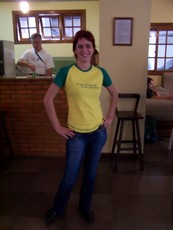
I also got a chance to meet
Fernanda G. Weiden, who was fascinating in
her own right. She’s 23 years old (as of this writing) and
lives in Sao Paulo, Brazil... and is already doing amazing things.
(The picture shown here of her is actually from the Sunday party.)
She’s one of the founders of Projeto Software Livre Mulheres, which
appears to have had a tremendous impact on the presence of women in OSS/FS
in Brazil.
She’s a contributor to Debian (maintaining some packages), and is thus
also listed among the
Debian women.
She’s also working to spearhead the establishment of the
Free Software Foundation - Latin America
organization.
She works at IBM (at the Linux Technology Center,
an Open Source development lab); I also got to
meet some of the people who work for her, and they seemed to
think well of their boss.
Obviously, she’s a leader.
Yet she’s also quite humble and charming in person.
I was glad I got to meet and talk with her;
I think we’ll be hearing a lot more about her.
When I returned from the hotel I found Eric Raymond coding in the hotel’s common area on a GPS driver. When he’s done, his driver will automatically detect which of many GPS receivers have been connected, if any, and then configure everything without needing any user input at all. (This is more than Windows does, which usually requires manual installation and confirmation of a driver.) Auto-configuring everything is a good idea, but I challenged him with a new idea: what about automatically setting the timezone to the correct value as you change location, if you have a GPS receiver? He liked the idea, but unfortunately he didn’t find any highly accurate maps that would reliably translate location into timezone (including daylight savings time value). If you know of any such maps, let him know.
Eric did his presentation on Saturday. It had been billed as the “Cathedral and the Bazaar”, but since he thought most people had heard that, he instead talked about techniques for convincing thought-leaders. He stated that many in the OSI believe strongly in freedom, but he believed that the only way to convince people to use OSS/FS was to find a reason in their own self-interest to use OSS/FS.
In particular, I thought he correctly noted that large organizations do not usually change bottom-up, because middle management’s job is to prevent this; instead, the job of determining strategic direction belongs to those at the top.
Janet Casey manages the Free Software Foundation / Unesco directory of OSS/FS software, and thus had many interesting things to say about how to evaluate software. She referenced my paper on evaluating open source software / Free software (OSS/FS) and said some very nice things about my work -- thanks!
The parts I found most interesting were the things that she recommended developers do with their websites, which can really aid users. For example, make sure there’s a very short description of what your program basically does, and contrast it with other programs that do similar jobs. And make sure it’s easy to download the program binary or its source code... that seems really obvious, but she showed examples where even these basics weren’t easy at all.
James McQuillan then gave a presentation about the Linux Terminal Server project. This project has influenced many, because in many circumstances it’s created an incredibly cheap way to provide computing power to people. This project lets you have just one computer run the actual programs, while every user uses very cheap computers that talk with it (they are often either old computers or tiny new computers with no moving parts). The users are simply running as X terminals.
This approach can dramatically decrease deployment costs where it applies. This is old technology in the Unix world, but it still astonishes the many people who are unfamiliar with it. The Linux Terminal Project makes setting up such configurations much easier; as a result, it’s much easier to apply this approach. 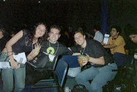
During this, Luis Aires very kindly brought me a chimarrão to try. A chimarrão is basically a southern Brazilian hot tea, drunk with a very distinctive cup and straw. It was very tasty! I did manage to spill some on me (oops!), sigh. But they were very gracious -- and even more importantly, provided me with a refill :-). I had a picture with him and Glauber de Oliverra (”Glomer”). That was really nice of you to bring all that stuff so I could try out that tea -- thank you!! Luis also offered to translate my presentation into several other languages, and I’m grateful for that. There were a lot of really friendly and helpful people there, and Luis was definitely one of them.
Maddog gave his presentation, in this case on “pirated software is not free”. Maddog’s given name is Jon Hall, but back when he was Department Head of Computer Science at Hartford State Technical College, his students gave him the nickname maddog. At this point, that’s how he’s known today. Maddog is a kind, gentle, and very smart man, and as I noted earlier he’s widely loved. He’s more like a father figure to many I think; he’s been in the computer industry since 1969, using Unix since 1977, using Linux since 1994, and he’s been the Executive Director of Linux International since 1995. Interestingly, he once worked at AT&T’s Bell Labs and Digital Equipment Corporation (DEC). One conference organizer noted that planning for Maddog’s presentations is easy -- they’re always packed, and always scheduled last (as a closing presentation).
Maddog emphasized that pirated software is not free -- it’s stealing. He understood and sympathized with those who simply could not afford proprietary programs -- he noted that it takes 10 months of salary to buy one copy of Microsoft Windows in China, and Chinese know it didn’t cost that much to make. But that doesn’t make it any less wrong. He also noted that those who support these people (e.g., through consulting arrangements with people who they know are using illegal software copies) are just as guilty.
And there are many hidden costs to illegal copying. Obviously, a vendor will not provide knowing support, updates, improvements, and so on for those who make illegal copies. This means that people who use illegal copies give up any say in what their future is, and risk being unable to get help when they need it.
He also believes that depending on illegal copies of proprietary software robs countries of the benefits of really understanding software. He had a wonderful set of examples of young kids who, because the source code was free for them to study, had already made a tremendous impact. One kid was already making money selling his own specialized OSS/FS distribution -- Maddog only heard about this because his parents were looking for an accountant to help the kid manage his income (!). At a different time, he heard three people argue about how to best modify a program so it could perform well on a supercomputer -- and when they turned the corner, it turned out to be two HP engineers and an 11-year-old kid. Oh, and the HP engineers were wrong... and the 11-year-old was right. Why? Because just like the Internet, “it doesn’t matter if you’re a dog” -- with OSS/FS, anyone (even a young person) can learn whatever they want to learn, and pursue whatever interest they’d like to pursue.
He had some interesting comments about a Brazilian program to bring computers to those in poverty. Brazil plans to sell very inexpensive computers to poor people with zero-interest loans so that they can have access to a computer. Brazil currently plans to use OSS/FS software (operating systems, office suites, and so on) to do this; this makes sense, since it would cost much less to do things this way in a very cost-sensitive circumstance. Also, one of Brazil’s goals for this project appears to be to increase understanding of computers among their poor; if that’s so, it’s understandable why they would choose software whose source code can be studied, modified, and redistributed. As I understand Maddog’s presentation, Microsoft complained, wanting their operating system there instead (and at a higher price too!). Apparently one of their objections was that this project might increase illegal copies of Windows (since people might buy the computers with the OSS/FS software, then replace that software with an illegal copy of Windows). Maddog said this was unlikely -- most people just use whatever comes with their computer, so this project was likely to decrease piracy. But Maddog had a very interesting response; he proposed that if Microsoft was really worried about illegal copies of Microsoft Windows, then Brazil should simply choose a different computer chip (such as the Macintosh’s PowerPC chip) so that the computer would never be able to run an illegal copy of Windows. Apparently the objections ceased at that point. It will be interesting to see what happens next.
(An anonymous Groklaw participant has since pointed me to a Fortune magazine article of July 20, 1998, where Bill Gates says “Though China sells around 3 million computers per year, people don’t pay for software. But there will be one day, when they will have to pay. So long as they want to steal, I hope they will steal ours. They will become addicted. Therefore, we can plan how to retrieve our money some day in the next ten years.”)
The question and answer session was interesting. At one point he noted that everyone treats him very nicely -- and he’s grateful -- but he also wanted to make sure that others were also appreciated for the work that they do. Very gracious.
The conference organizers then did a presentation about the conference itself. There were 4,414 participants that they knew of, including 3,013 “individual” participants, 222 speakers, and many others with various titles and roles. There had been a drive to collect food and money for the poor; the conference collected 11.7 tons of food for the poor, and 3 tons of seeds for the poor via the free seed bank (the seeds could produce 13,000 tons of food).
Presentations from the conference had been broadcast through “TV software livre” using only OSS/FS software. All of the presentations were recorded using the patent-free Ogg Vorbis (sound) and Ogg Theora (video) formats, which are supported by more OSS/FS projects themselves; at least 12,350 people had downloaded those presentations before the conference had even ended. They would also sell DVDs of the presentations for those who could not come.
The whole thing then closed off with a big party atmosphere -- hired clowns walked around on stilts throwing candy into a delighted audience, and big banners were placed announcing the dates for next year’s conference.
I then went off to dinner. In this case I went with Bruno Souza (president of SouJava, a Brazilian Java user group that is a member of the Java Community Process), Dalibor Topić (lead maintainer of Kaffe), and Mark Wielaard (lead for GNU Classpath, the leading OSS/FS Java core library implementation). This was great, because I wanted to grill them on exactly what was going on with OSS/FS implementations of Java. I had read up some of the pieces, but there just didn’t seem to be any one place where you could get the big picture. You could constantly crawl the web and individual project sites to see a piece, but only a piece. At FISL there had been several presentations that helped somewhat. For example, Dalibor Topić and Mark Wielaard gave a presentation on GNU Classpath and Kaffe; if you’re interested in this topic you should look at their presentation. Their presentation explained how those two pieces worked together, and a little bit about how some of the related projects worked together, but that still didn’t give me the big picture I was looking for.
In the end, this demonstrated why people go to conferences -- to learn from each other. Dalibor Topić and Mark Wielaard had an excellent grasp of their technologies and how it fit into a larger picture, but didn’t know what information their potential users (like me) wanted to know. This is a danger of being so steeped in an area -- you forget how much other people don’t know. I knew what I wanted to know (I wanted to understand the big picture and how the project results worked together), but I didn’t have the information. I agreed to help them write down what was going on, if they in turn would help me understand what was going on. It seemed to be a fair trade to me. 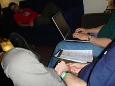 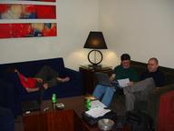
In the end, we stayed up until 4:30am (well, Bruno did snag a few moments of sleep near the end), capturing the results in a fairly simple OpenOffice.org document.
It turns out that there are a lot of OSS/FS Java projects. Each project has been working on some piece of Java, and now they’re all filling in so well that major Java applications work on them. I played the part of journalist, to try to understand these pieces; I repeatedly asked questions, working to understand and simplify things to their essential points.
After a lot of discussion, I realized that the various projects could be grouped into three categories: building the Java infrastructure (virtual machines, tools, and class libraries), testing them, and delivering their results:
I handed off my summary to them, and in particular to SouJava. I expect they’ll make various improvements. They’ll probably cast it some different tone -- at this point I view that work as their document. I got what I wanted: A better understanding of their current status and how they work together.
Update: You can now get the
overview of
FLOSS Java implementations at classpath.org.
Sunday morning, last day -- and there’s a big party for the
speakers at Pablo Lorenzzoni’s house.
Pablo was my point of contact for the conference, and I’m very grateful
to him... without him I don’t think I would have been able to be at
the conference at all.
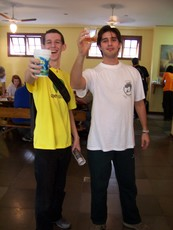
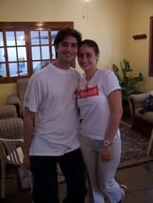
I’ll once again say I was impressed with all the hard work the conference organizers put in. I’ve had to do some conference organizing myself, and thus I’ve had a glimpse of the amount of trouble it is. I was told by one person that they will intentionally not see each other for two weeks... and then start preparing for next year’s conference. And many were, indeed, going to help run the conference again. That’s dedication! And it shows by how well things went.
I never did get to see the southern cross (sigh) -- hopefully I’ll be
south of the equator again someday and get a chance to see it.
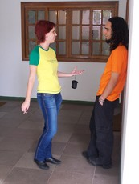
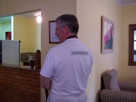
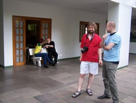
I talked with many different people, on a range of different topics.
For example, I briefly discussed human language translation with Leon.
I speculate that OSS/FS approaches like Wikipedia’s
might also work very well for developing
a Babblefish-like translation capability.
The trick would be establishing a Website
that enabled people to enter rules and translation data.
Instead of creating complex algorithms to do this, it would need to use
a straightforward (yet powerful) algorithm to do the matching,
and place all the “smarts” in data that could be maintained by a large
community.
It’d be an interesting experiment to see, at least.
One of those discussions at the party was with Bruno Souza (head of SouJava), and it was really interesting to me. I asked hims a simple question: Why is OSS/FS so strong in Brazil? He had some interesting answers:
But those only describe the environment -- not what happened. Part of the answer seems to be in their experience with “telecenters” as a way to help the poor. The cities of Porto Alegre and Sao Paolo separately decided to start “telecenter” programs to provide computer access to the poor (though the cities did consult with each other as each learned lessons). There were definitely problems at first; according to some, early efforts just plopped a center in an area and left the community to figure out what to do (which often led to disappointing results).
But after some teething pains, they’ve had remarkable successes. In Sao Paulo, they have about 200 centers, each with 20 computers, all running OSS/FS (using the Linux Terminal Server project results, driving the costs way down); one person estimates these 200 centers reach 700,000 people. Kids can only use them if they do well in school (encouraging school participation), and they’re really community centers where there are rooms to learn dancing, reading and writing, and so on. Adults can use the centers to print their business cards, send resumes, and so on, so that they can begin their own businesses or get a job.
They’ve had more success by first working with the communities to find out what they need, and then specializing the center to that community. I heard lots of great stories; for example, in one poverty-striken inner-city community, its leaders noted that they had few resources, but the local kids loved to make music in the street. So their center specialized and became a music recording studio (all using OSS/FS, best as I understand it). They’ve already produced a CD (through a lot of people working together), with more on the way. This not only brings in money, but possibly even more importantly, there’s a sense of pride in that community that was not there before. The point of these centers is simply to help people help themselves. The telecenters have to be managed and self-supported by the community; it’s not a continuous giveaway. And they’re built using an approach they call a “public-private partnership”.
In more recent Brazilian elections, a new Brazilian president was elected from the same party as the leaders in Sao Paulo and Porto Alegre. He thought these telecenters worked well, so now they’re spreading around Brazil.
The combination of a government changing its own internal structure to widespread use of OSS/FS, plus telecenters that use OSS/FS, mean that there’s a vast number of people who are already familiar with OSS/FS, and comfortable using it. Very interesting indeed. And I was very glad to hear the stories about people who started from nothing, were given a small starting help, and are now on their feet and helping others.
I realized I still hadn’t had a chance to do much shopping for baubles
to bring home, and few stores are open on Sunday.
There was a fair nearby, though, and Fabricio Flores went beyond the
call of duty and helped me get there, get a few things, and
get back to the party area in time.
I rushed to the airport and got on my plane back to Sao Paulo. I then rushed to get my connecting flight... and found out my plane had been delayed 4 hours. Ugh. Leon Shiman (of the X.Org Foundation) was supposed to go on the same plane, so he was stuck in the same boat. The airlines were very apologetic, and they did shuttle us to a hotel to have dinner (we were supposed to get it on the plane). Leon and I had a chance to talk; Leon is a sharp cookie and has seen a lot of interesting things. Leon in particular helped me understand better the history of X over the years, as well as where it seemed to be going.
This flight delay was definitely not in my plans. When I arrived in the U.S., I had to rush straight from the airport to work, shower and change there, and rush off to an important meeting that I had to be at.
But believe it or not, it was worth it.
I had a good time, I learned lots, and hopefully I helped some others too.
My thanks to Till Kamppeter and Mark Wilaard for letting me include some of their photos in this travelogue. If you want to see more pictures, here is a collection of other people’s FISL 6.0 pictures.
 You may also enjoy my FOSDEM 2002 travelogue.
You can also go see
my home page,
my book
Secure Programming for
Linux and Unix HOWTO,
or my paper
Why
Open Source Software / Free Software (OSS/FS)? Look at the Numbers!).
You may also enjoy my FOSDEM 2002 travelogue.
You can also go see
my home page,
my book
Secure Programming for
Linux and Unix HOWTO,
or my paper
Why
Open Source Software / Free Software (OSS/FS)? Look at the Numbers!).
{kind=link}
{kind=link}
{kind=link}
{kind=link}
{kind=link}
{kind=link}
{kind=link}
{kind=link}
{kind=link}
{kind=link}
{kind=link}
{kind=link}
{kind=link}
{kind=link}
{kind=link}
{kind=link}
{kind=link}
{kind=link}
{kind=link}
{kind=link}
{kind=link}
{kind=link}
{kind=link}
{kind=link}
{kind=link}
{kind=link}